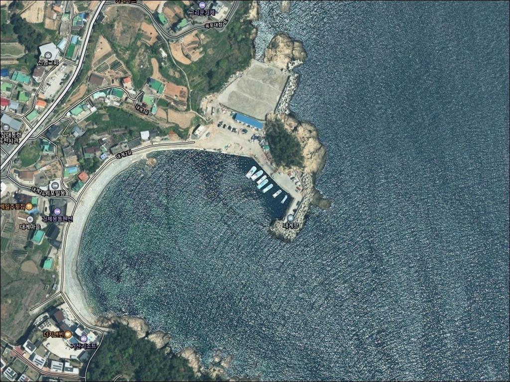
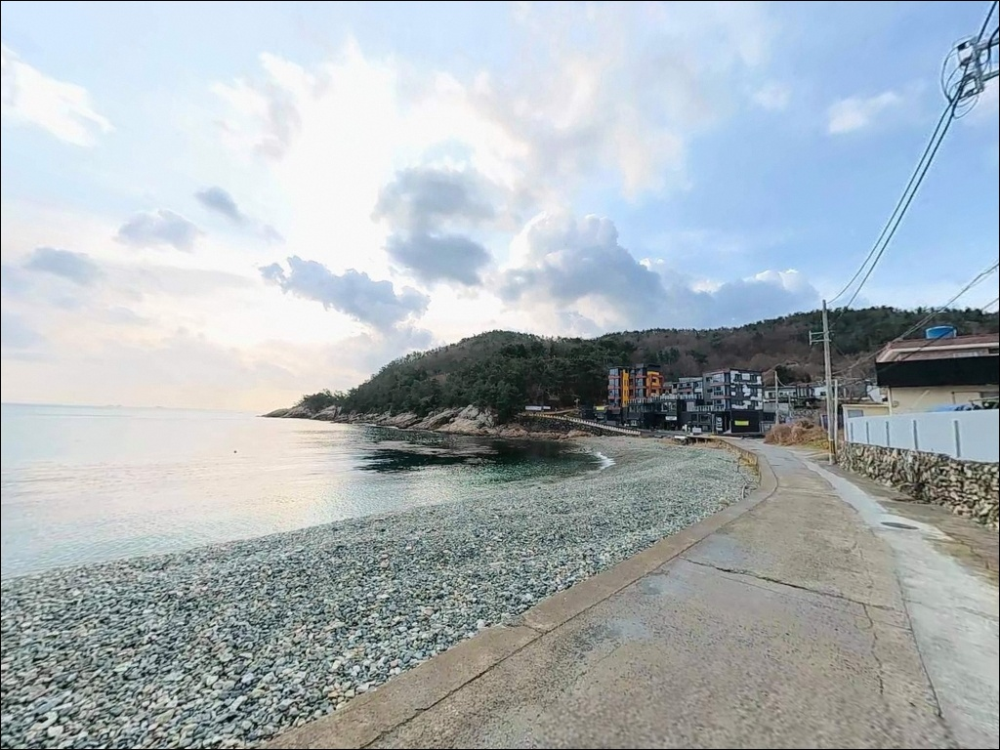
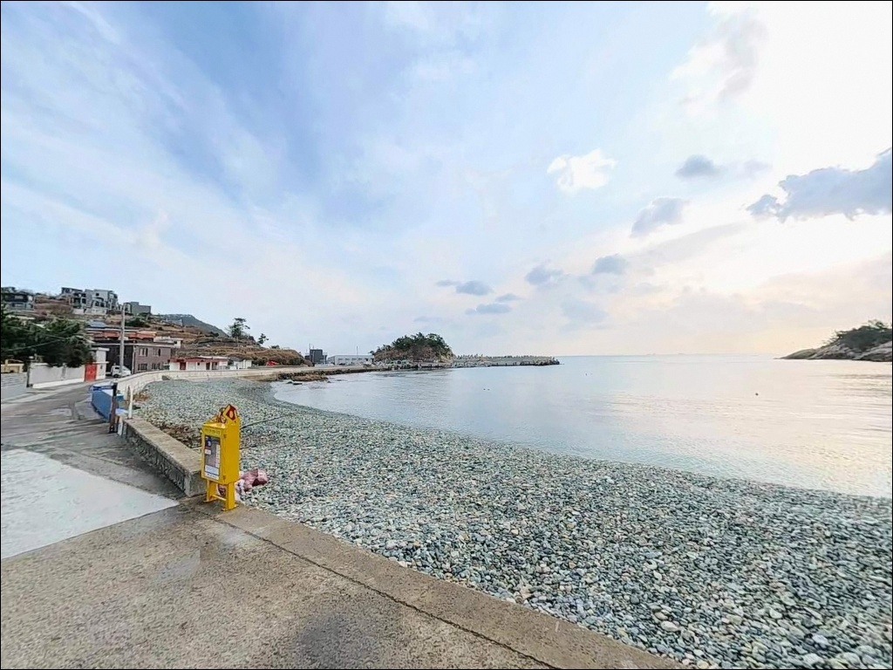
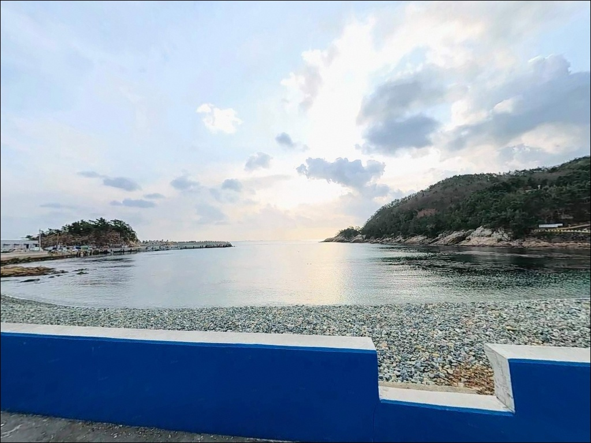
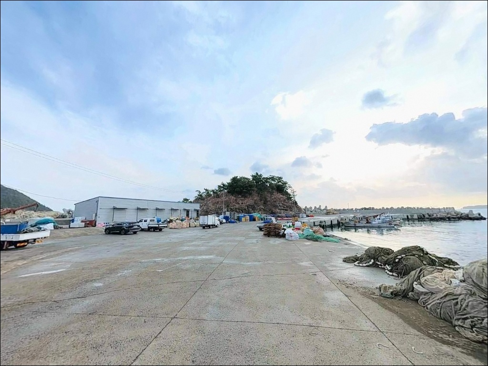
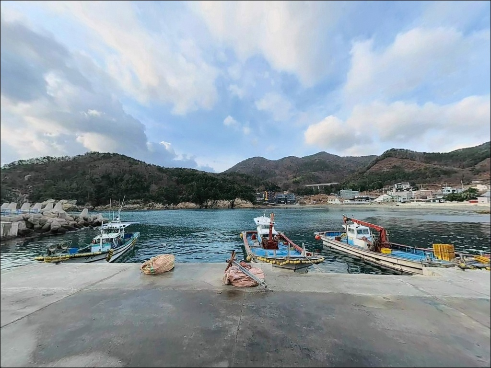
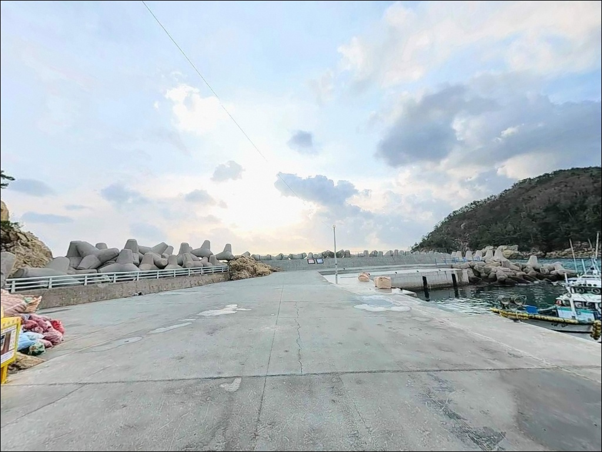
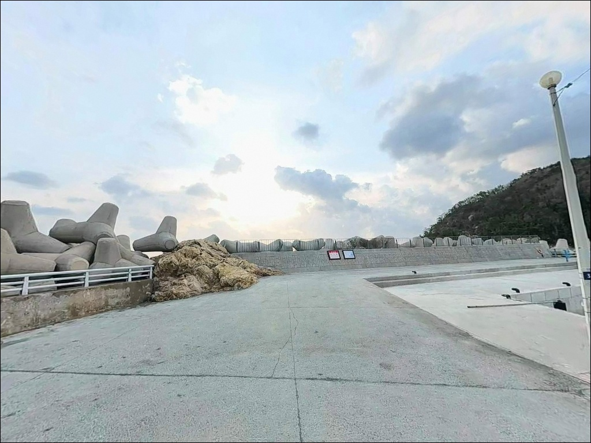
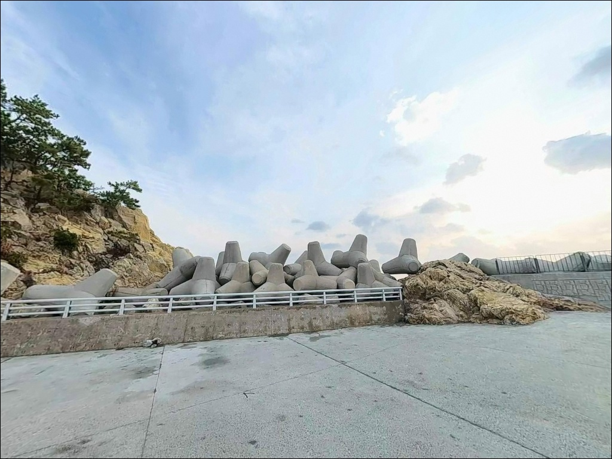

C구간 수심 10m 깊은 골, 들물 타임에 조과 갈린 거제 대계방파제 릴찌낚시
이 페이지에는 광고(제휴 링크 포함)가 있으며, 광고 링크를 통해 구매하면 운영자가 판매 수익 또는 수수료를 받을 수 있습니다. 포인트 사진: 카카오맵 스카이뷰·로드뷰. 이 페이지의 지도·사진 이미지는 카카오맵의 실제 서비스 이미지와 다를 수 있습니다.


포인트 안내
대계항 (대계방파제)
경남 거제시 장목면 외포리 1228-5
대계방파제는 구간마다 수심과 조류 흐름이 다르게 형성되어,
어디에 자리를 잡느냐가 이날 조과의 기준선이 됩니다.
같은 날 같은 채비를 써도
방파제 끝단 C구간과 내항 B구간은
조과 차이가 크게 날 수 있습니다.
이 글은 대계항의 구간별 지형 특성과 낚시 방식별 공략 조건,
진입 동선과 차박 환경에 집중합니다.
경남 거제시 장목면 외포리,
거가대교에서 58번 국도를 타고 약 10분 거리에
대계마을이 자리합니다.
전 대통령 생가가 있는 역사 있는 마을이기도 하며,
마을 앞 바다를 막아선 길이 100m의 방파제가
거제 북부권 방파제 낚시인들 사이에서
꾸준히 찾는 검증 포인트로 알려져 있습니다.
조황 정보나 특정 어종 보장은 이 글의 범위에 포함되지 않습니다.
지형 구조, 구간별 공략 조건, 진입 환경을 중심으로 정리했습니다.

1. 진입 동선과 포인트 접근성
거가대교를 이용하는 경우,
58번 국도를 타고 거제 방면으로 약 10분 진행하면
외포교차로가 나옵니다.
이곳에서 대계마을 방향으로 우회전 후
옥포대첩로를 따라 약 800m 진행하면
대계마을 진입로와 방파제에 닿습니다.
거제대교 방향에서는 14번 국도로 거제시를 통과한 뒤
동일 교차로로 합류하면 됩니다.
마을 진입로는 포장도로이며
일반 승용차·SUV 기준 진입에 무리가 없습니다.
다만 대계마을로 내려가는 구간 일부는
도로 폭이 넉넉하지 않고 완만한 경사가 포함되어 있어,
대형 캠핑카나 넓은 차량은 출발 전
위성지도로 회차 공간을 반드시 확인하는 편이 좋습니다.
주차는 방파제 내항 입구 쪽 소형 공터와
마을 도로변 공간을 활용하는 방식이 일반적입니다.
어촌계 작업 차량 이동 동선과 겹치지 않는 자리가 기준이며,
마을 내 어선 관련 장비와 맞닿은 구역은
주차 전 상황을 확인해야 합니다.

2. 차박 환경과 야간 체류 여건
대계마을은 소규모 어촌마을로
민가 밀집도가 낮은 편입니다.
야간에는 차량 통행이 적고
마을 규모 자체가 크지 않아
프라이버시 측면에서는 나쁘지 않은 환경입니다.
다만 방파제 앞 공터 규모가 작아
차박을 주목적으로 삼기보다는
낚시 후 짧게 머무는 형태에 가깝습니다.
야간 조명은 마을 내부 구간에 한해 가로등이 설치되어 있으며,
방파제 외항 끝단 구간은 별도 투광등 여부를
현장에서 직접 확인해야 합니다.
개인 헤드랜턴은 필수이며,
야간 방파제 이동 시 저속 서행이 기본입니다.
외항 방향은 외해의 영향을 받는 위치이므로
기상에 따라 바람과 파도가 강해질 수 있습니다.
차박 체류 전 당일 기상 예보와 파도 높이를
반드시 확인하는 것이 안전한 출조의 조건입니다.


3. 주변 편의시설 및 인프라 현황
대계마을 자체에는 편의점이나 식당이 없습니다.
마을 진입 직전 옥포대첩로 도로변에
CU 거제대계마을점이 위치해 있어
진입 전 식수·간식·소품을 미리 채우는 것이
가장 효율적인 동선입니다.
대계항 북쪽 약 1.5~2km 구간의 외포마을 중심부에는
세븐일레븐 거제외포점이 있으며,
외포리 131-31에 위치한 외포낚시는
새벽 5시 30분부터 운영하는 낚시용품점으로
출조 직전 채비 보충에 활용할 수 있습니다.
(일요일은 오전 2시부터 운영)
방파제 현장에는 별도 화장실이 없습니다.
대계마을 회관 주변의 공중화장실이
이용 가능한 편이나, 출발 전 미리 해결하고
이동하는 편이 현실적입니다.
응급 상황 대비 식수·비상약품도
출발 전 완비하고 진입하는 것이 기본입니다.

4. 진입 전 반드시 챙겨야 할 준비사항
물때 확인이 첫 번째입니다.
대계항은 외포방파제에서 흘러 내려오는 조류가
방파제 홈통 구조로 수렴하는 형태이며,
들물 피크 전후로 입질이 살아나는 패턴이
이 해역의 기본 흐름입니다.
바다타임에서 외포리 기준 물때를 확인하고
들물 타이밍에 맞춰 입장 시각을 조율하는 것이
이 포인트를 제대로 쓰는 방법입니다.
방파제 C구간(외항 끝단~갯바위 연결부)과
D구간(외항 전 구역)은 낚시인 밀도가 높은 편입니다.
루어나 에깅 캐스팅 전에
주변 릴찌낚시인의 흘림 방향을 먼저 확인하고
간섭이 발생하지 않는 각도를 잡아야 합니다.
바닥에 암초가 많아 채비 손실이 잦은 편이므로
여분 채비는 넉넉하게 준비하는 것이 좋습니다.
대계마을 진입로가 단선 구조이므로
야간 차량 이동 시 저속 서행이 필수입니다.
구명조끼는 방파제 전 구간에서 착용하며,
미끄럼 방지 밑창 신발을 기본으로 갖추고 진입합니다.
기상 악화 시 홈통 구조 특성상
방파제 위로 파도가 올라올 수 있으므로
기상 예보 확인을 출조 당일 아침에 한 번 더 합니다.

5. 외항 끝단에서 릴찌낚시 조과가 달라지는 조건
대계방파제는 길이 100m의 소형 방파제이지만
구간마다 성격이 뚜렷하게 나뉩니다.
방파제 초입(A구간)은 대형 암초가 산재하며
해초밭이 형성되는 시기에
농어와 볼락이 회유하는 구간입니다.
내항 석축 주변(B구간)은 수심 5~6m로
소형 방파제치고는 깊은 편이며,
야간에 조과가 더 살아나는 구간입니다.
이 포인트의 핵심은 외항 끝단~갯바위 연결부(C구간)입니다.
방파제 중앙부에서 원거리를 겨냥하면
수심 10~11m 구간이 나오며,
바닥에 암초와 해초가 공존하는 지형에
조류 흐름이 집중됩니다.
D구간(외항 전 구역)은 근거리 6~7m,
원거리 10m 내외로
발 앞부터 원거리까지 전 구간에서
입질을 받을 수 있어 낚시인이 자주 몰리는 자리입니다.
전체 지형은 약간 만곡한 홈통 형태이며,
외포방파제에서 흘러 내려오는 조류가
이 홈통으로 수렴하는 구조입니다.
조류 소통은 연중 안정적으로 유지되는 편이나,
사리 전후에는 흐름이 강해지는 경향이 있으므로
물때를 먼저 판단하고 입장하는 것이 기본입니다.
출조 전 최신 조황은
"대계방파제 조황 / 외포방파제 조황 / 거제 장목 방파제 낚시" 키워드로
꼭 검색해 보시기 바랍니다.


6. 포인트에 어울리는 낚시 스타일
이 포인트에서 가장 검증된 스타일은
릴찌낚시입니다.
감성돔에는 1~2호 구멍찌 반유동 채비,
벵에돔에는 0~B호 구멍찌 전유동 채비를 기준으로 씁니다.
C구간과 D구간 외항에서
조류를 타고 흘리는 것이
대계방파제 릴찌낚시의 정석 공략법입니다.
여름부터 초가을에는 벵에돔 반응이 강해지고,
겨울에는 감성돔과 학공치 패턴이 형성되는 편입니다.
볼락 루어낚시도 이 포인트와 잘 맞습니다.
1~6g 지그헤드에 소프트웜 조합으로
중층~바닥을 탐색하는 방식이 기본입니다.
A구간 암초 주변과 C구간 갯바위 연결부가
주요 공략 지점이며,
5~6g 지그헤드로 원거리를 노리면 씨알이 굵어지는
경향이 있습니다.
에깅도 노려볼 수 있습니다.
3.5호 에기 기준으로 외항이 시작되는 지점과
갯바위가 이어지는 C구간 경계부에서
반응이 집중되는 편입니다.
들물 조류가 살아있는 타이밍에 입질이 활성화되며,
초가을 시즌에 무늬오징어를 기대해볼 수 있습니다.
원투낚시는 내항과 외항 모두에서 성립합니다.
수심이 확보된 외항 쪽에서는
도다리·붕장어를 기대해볼 수 있으며,
바닥 지형이 거친 구간이 많으므로
채비 손실을 감안한 준비가 필요합니다.
대계항은 대계 → 소계 → 외포 방파제로 이어지는
연속 동선의 시작점으로,
조과가 부진할 때 차로 5분 이내에
대체 포인트로 이동할 수 있습니다.

7. 대안 포인트와 플랜 B 동선
대계항이 여의치 않을 때
첫 번째 대안은 소계방파제(닭섬 방파제)입니다.
대계항 바로 북쪽에 인접한 어촌정주어항으로,
방파제와 갯바위가 연결된 구조는 대계항과 유사합니다.
같은 해역 조건을 공유하므로
물때·조류 판단 기준을 그대로 적용할 수 있으며,
바다타임에 거제외포 낚시포인트로
별도 등재되어 있습니다.
북쪽으로 약 1.5~2km 이동하면
외포항 방파제가 있습니다.
대계보다 규모가 크고 낚시 여건이 다양하며,
야간 외등이 갖춰져 있어
야간 낚시 접근성이 더 높습니다.
대계항을 처음 찾는다면
외포항 방파제를 기점으로 잡고
대계항을 병행 탐색하는 동선이
이 권역에서 가장 효율적입니다.
차박 대안으로는
거제시 장목면 구영리의
황포해수욕장 차박지를 고려할 수 있습니다.
거제시가 공식 차박지로 운영하는 곳으로
주차 공간과 샤워 시설을 갖추고 있습니다.
유료 운영이므로 방문 전 이용 조건을
사전에 확인하는 것이 필요합니다.

구간을 알면
대계방파제가 달라 보입니다
릴찌낚시나 볼락 루어낚시를 즐기는 낚시인이라면
대계방파제의 지형 조건은 잘 맞는 구조입니다.
C구간 외항 끝단의 깊은 수심과
홈통으로 수렴하는 조류 흐름은
릴찌 채비가 힘을 발휘하기 좋은 조건이며,
에깅과 루어낚시까지 함께 운용할 수 있어
다양한 스타일의 낚시인에게 선택지가 열려 있습니다.
반면 구간 선택 없이 방파제 임의 자리에 앉거나,
물때 확인 없이 사리 전후에 입장하면
채비 컨트롤이 어려워지는 상황을 맞을 수 있습니다.
물때 확인, 구간 파악, 채비 여분 준비,
이 세 가지를 갖추고 간다면
거제 북부권에서 기억에 남는 출조가 될 수 있는 곳입니다.
낚시를 마치고 조용한 어촌마을에서
하룻밤 머무는 차박 여행자라면,
방파제 앞 공터의 공간 여부를 먼저 확인하고
소계·외포 방파제로 이어지는 연속 동선을 함께 계획해두면
낚시와 차박을 모두 챙길 수 있는 출조가 됩니다.